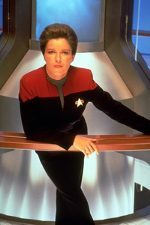
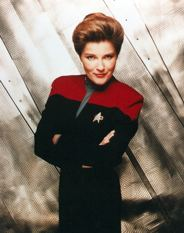
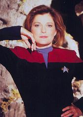
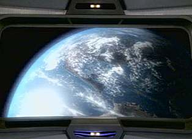

|
Para
os ntimos, Kathryn...
 Kathryn
Janeway, capit da USS Voyager, nasceu na Terra, em Indiana (Amrica
do Norte) a 20 de maro de 2332. Filha do Almirante Edward
Janeway e de Gretchen Janeway, deixou uma irm e noivo no
quadrante Alfa. Kathryn
Janeway, capit da USS Voyager, nasceu na Terra, em Indiana (Amrica
do Norte) a 20 de maro de 2332. Filha do Almirante Edward
Janeway e de Gretchen Janeway, deixou uma irm e noivo no
quadrante Alfa.
 Em 2371, foi-lhe
dado o comando da recm-comissionada Voyager pelo almirante
Paris, pai do tenente Tom Paris, o piloto da intrpida nave. Sua
misso original era procurar um grupo maquis nas Badlands mas,
com a seqncia de eventos que culminou no isolamento no
distante quadrante Delta, Janeway passou a lutar para trazer sua
tripulao para casa.
Ela uma capit forte que no tem medo de correr riscos,
enquanto sua inteligncia, compreenso, dedicao e diplomacia
a tornaram uma das melhores na Frota. Suas aptides para
engenharia e cincias so inquestionveis. Seus estudos tambm
incluem cromo-lingsticas, lngua de sinais americana e
idiomas gesturais do Leyron. O gosto por assuntos complexos data
da infncia, quando preferia ficar em casa estudando a sair para
acampar, cozinhar etc.
 Para
relaxar, Kathryn gosta de interagir em programas do holodeck, como
novelas gticas, ski e iatismo. Em sua juventude na zona rural de
Indiana, ela praticava tnis. Enquanto criana, tambm se
interessava por bal.
Como todos os demais capites, ela v sua tripulao como um
rebanho de ovelhas, mas ser atirada ao Quadrante Delta e isolada
de casa a levou a questionar a relao com seus oficiais. A
solido a obrigou a passar mais tempo com os tripulantes da
pequena Voyager (mas sempre mantendo aquela "distncia
respeitvel").
Janeway constantemente sente-se culpada pela situao em que a
nave se encontra. Seu treinamento da Frota faz com que sempre
respeite a Primeira Diretriz, mesmo que isso implique isolar a
nave a setenta anos de casa e misturar os maquis ao seu grupo.
Outra questo com a qual tem que lidar a fraternizao entre
membros da tripulao. Ela sempre soube que eventualmente eles
se juntariam em casais, mas participar disso um luxo de que no
dispe, uma vez que seria eticamente incorreto um oficial
superior relacionar-se com seus subordinados.
Houve casos em que sua afeio por Chakotay, o primeiro-oficial,
era evidente. Em outras ocasies, a entidade Q a procurou com
intenes romnticas. Houve tambm encontros rpidos com
aliengenas de passagem e, mais recentemente, com um holograma
irlands... Entretanto, aceitar o fim do noivado foi um processo
difcil, lento e doloroso.
Enfim, Kathryn Janeway uma mulher com autoridade e poder que
consegue preservar sua feminilidade muito bem. Sua meta
sobreviver, nutrir as necessidades dos colegas e traz-los em
segurana para casa. A convico na crena de que a Voyager
conseguir de fato voltar inabalvel e representa a fonte de
suas foras.

Daniel
Sasaki co-editor do Trek
Brasilis
|